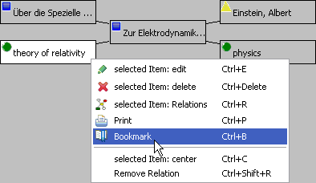
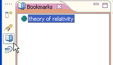

You can bookmark an item for that you can easily return to this item any time.
Use the item's context menu in the Relations Browser (or Ctrl+B) to bookmark the item your interested in.

Bookmarking an item
You can access the bookmarks in the bookmark view and use them as any item in a selection view,
i.e. you can display the bookmarked item in the Relations browser by double clicking it or you can drag'n drop it on an
item in the Relations browser to make the selected items related with the drop target.
Enter Ctrl+Alt+B or click the bookmarks button to display this support view.

The bookmarks view
This feature might be useful if you want to mark an item as your work item. You then can search and surf your Relations context to find items you want to relate with your work item. Having found an item you consider to relate, you can display it in the Relations browser and drop your work item from the bookmark view on it.
To delete an item from your bookmarks view, you press Delete (or use the context menu in the bookmarks view).